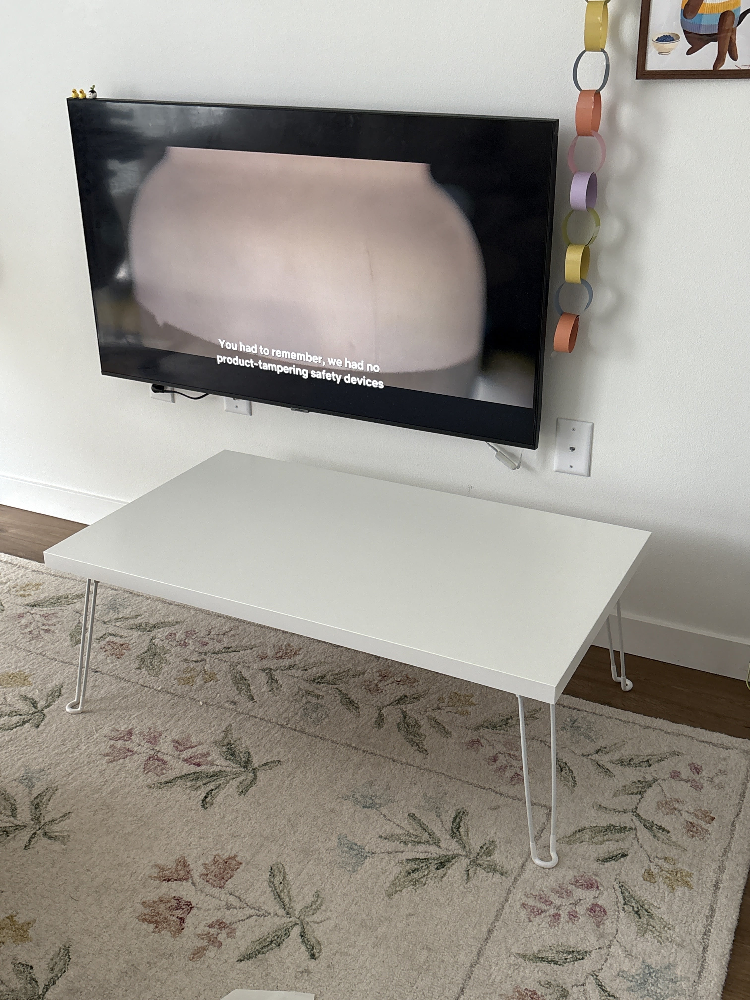
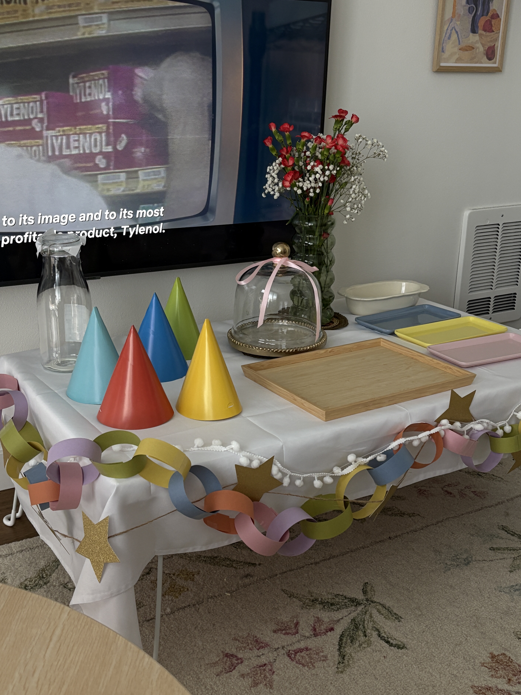
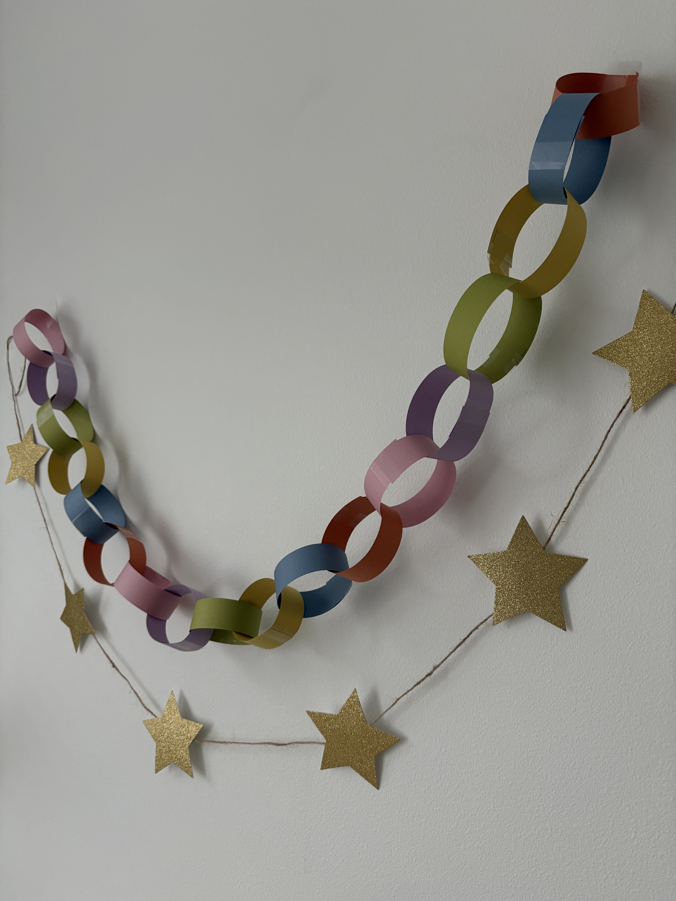
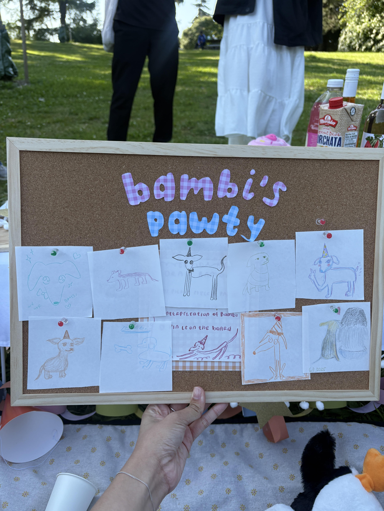

2025 · designed in figma and built in code in seattle . ݁₊ ⊹ .
conversation is my favorite medium
Design can manifest itself in many ways, physical environments being one of them. Whenever I have an opportunity to host an event, I see it as a design opportunity to curate a physical experience that sparks joy to those experiencing it.
On average, a yorkie chiweenie can live anywhere from 12-16 years. This means you have to make every moment count, especially birthdays. When my four-legged companion Bambi turned 4 years old, I saw this as an opportunity to build and get crafty to celebrate her exisitence.
For my dog's fourth birthday, I took on a full-scale experience design challenge. My first step involved physical prototyping: I learned how to construct a custom table from raw materials (a wood slab and metal legs), creating the foundational structural element for the event. I then curated the full visual identity, using six colors of construction paper for nostalgic paper chains, inspired by Victorian and early 2000s aesthetics. Through visual branding and color, I designed the entire space to evoke a cohesive sense of whimsical, child-like wonder.




2025 · designed in figma and built in code in seattle . ݁₊ ⊹ .
conversation is my favorite medium